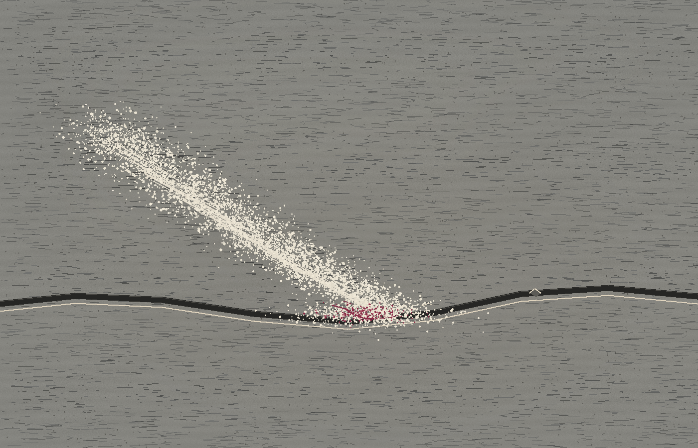

What the Edge Keeps
A hand-swept drift of flour meets a shallow inset in stone. The pale scatter narrows at the low point; a trace of red remains underneath it.

A hand-swept drift of flour meets a shallow inset in stone. The pale scatter narrows at the low point; a trace of red remains underneath it.
